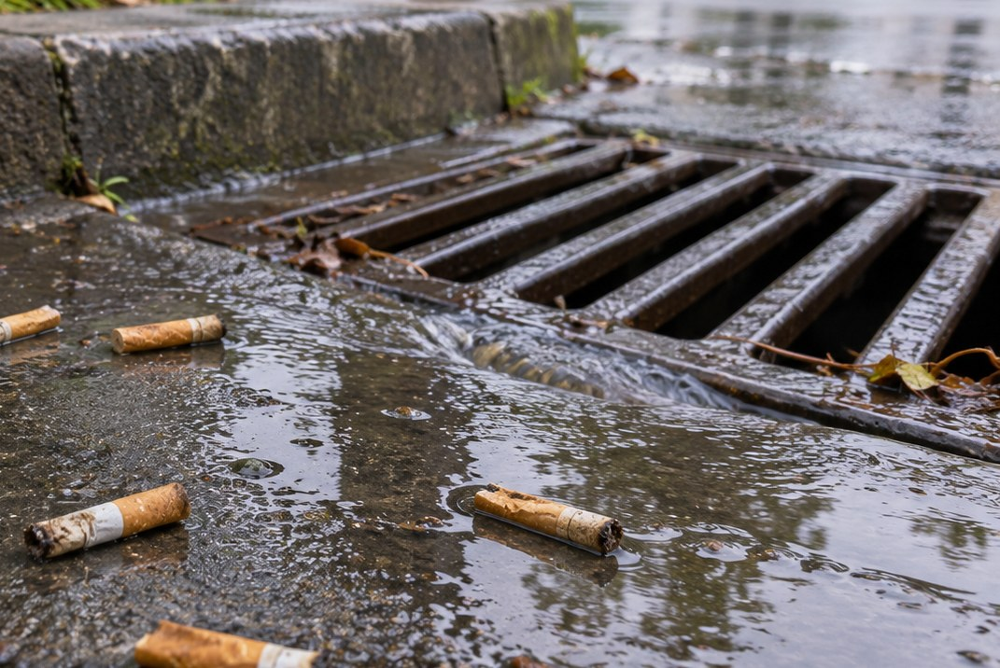

Descarte no chão
A bituca fica exposta em calçadas, praças, praias e jardins.
ENTENDA O QUE FICA NO AMBIENTE
Mesmo pequenas, as bitucas podem se espalhar e permanecer no ambiente por muito tempo.
COMPOSIÇÃO DO FILTRO
A maioria dos filtros é produzida com acetato de celulose, um material de origem celulósica modificado quimicamente e com comportamento plástico. Por isso, sua fragmentação pode gerar partículas persistentes no ambiente.
O QUE A CIÊNCIA INVESTIGA
Quando uma bituca usada fica exposta à chuva ou é levada para um ambiente aquático, parte dos compostos retidos no filtro e no tabaco pode passar para a água. Pesquisas também investigam a liberação de microfibras de acetato de celulose, que são partículas plásticas muito pequenas.
Isso não significa que todos os locais terão a mesma concentração ou o mesmo efeito: os resultados dependem da quantidade de resíduos, do tempo de exposição e das características do ambiente.
Referência: estudo sobre a toxicidade do líquido liberado por bitucas em organismos de água doce, publicado em 2020.
Consultar o estudo científico
QUANDO A CHUVA CHEGA
Resíduos abandonados nas ruas podem ser transportados pela água da chuva até bueiros e sistemas de drenagem. Por isso, o descarte correto também ajuda a proteger rios e córregos.
COMO A POLUIÇÃO SE ESPALHA
A chuva e o vento podem transportar resíduos descartados nas ruas para sistemas de drenagem e ambientes aquáticos.
A bituca fica exposta em calçadas, praças, praias e jardins.
Vento e água da chuva podem deslocar o resíduo até bueiros e galerias.
Substâncias presentes no resíduo podem alcançar o solo e a água.
O impacto depende das condições ambientais e da composição do resíduo. O conteúdo tem finalidade educativa.
Veja como descartar corretamente